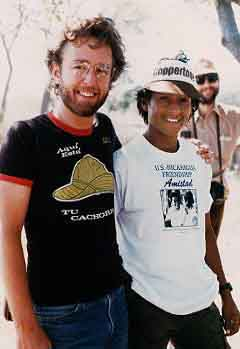

Sheldon Rampton's Bookmarks for a Better WorldThese links reflect some of the best internet resources I have found for activists interested in peace, human rights, social justice and the environment. If you find links that don't work or know of others that you think should be added, please let me know by email at sheldon@execpc.com.
|
 Dave Merritt (pictured above at left) was a staff member for the Wisconsin Coordinating Council on Nicaragua (WCCN) during my first trip there, which WCCN sponsored in 1985. We had a memorable encounter with Pedro Zuñiga (pictured at right), a young man who had just completed a tour of duty with the Sandinista army. I wrote about the encounter in my first book, Friends In Deed: the Story of US-Nicaragua Sister Cities. |